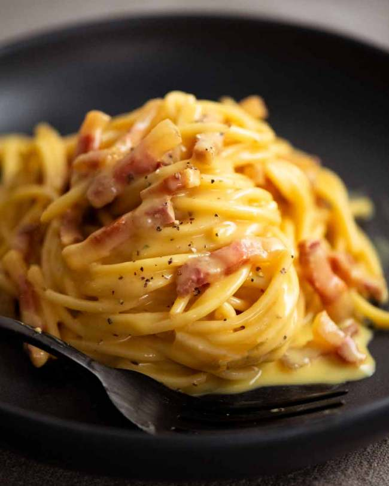

Pasta Carbonara

Chef John's Spaghetti alla Carbonara
Carbonara is a beautiful, classic Italian pasta that’s so creamy, you’d swear there’s a good amount of cream in it. And indeed, there’s plenty of recipes that cheat by adding in cream.
But today, we’re making spaghetti carbonara properly, the authentic, traditional way . No cream. Just guanciale egg , cheese and a splash of starchy pasta cooking water .
15 minutes later, THIS is the sight that will be in front of you. And you’ll make 60 million Italians beam with pride!
Ingredients
- 300gr guanciale, cut into 1/4-inch cubes
- 1 tablespoon olive oil
- 2 eggs
- 3 tablespoons grated Parmigiano-Reggiano cheese
- 3 tablespoons grated Pecorino Romano cheese
- 1 teaspoon ground black pepper, or to taste
- 250gr spaghetti
- 1 cup reserved pasta water
Step-by-step
- Cook guanciale with olive oil and 1 teaspoon ground black pepper in a Dutch oven over medium-low heat until almost crisp, about 5 minutes. Reduce heat to low.
- Whisk eggs, 3 tablespoons Parmigiano-Reggiano cheese, 3 tablespoons Pecorino Romano cheese, and 1 teaspoon ground black pepper in a bowl. Set aside.
- Bring a large pot of lightly salted water to a boil. Cook spaghetti in the boiling water, stirring occasionally until cooked through but firm to the bite, 10 to 12 minutes. Drain, reserving 1 cup of the pasta water.
- Pour reserved pasta water and drained spaghetti into the bacon-pepper mixture; stir to combine.
- Slowly pour egg mixture into the pasta mixture; cook, stirring constantly until the egg mixture forms a thick sauce, 1 to 2 minutes. Remove from heat.
- Stir remaining 3 tablespoons Parmigiano-Reggiano cheese and 3 tablespoons Pecorino Romano cheese into the pasta mixture and serve.